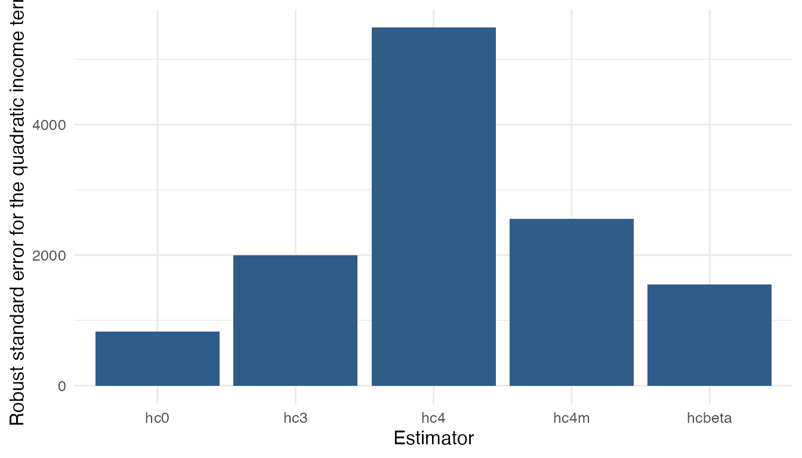
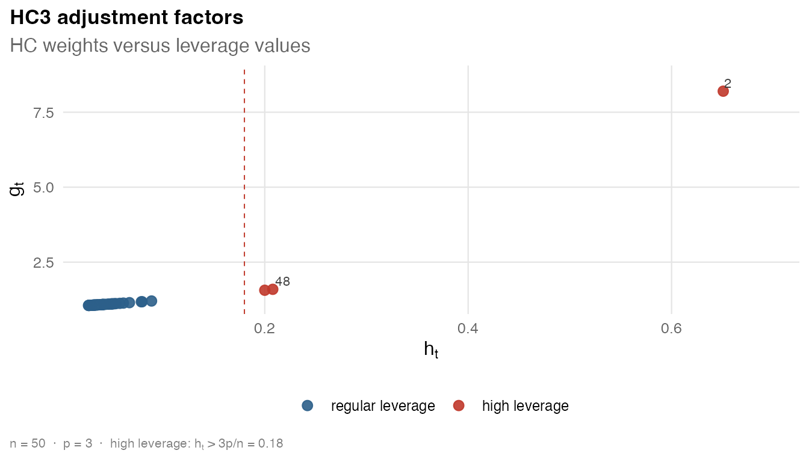
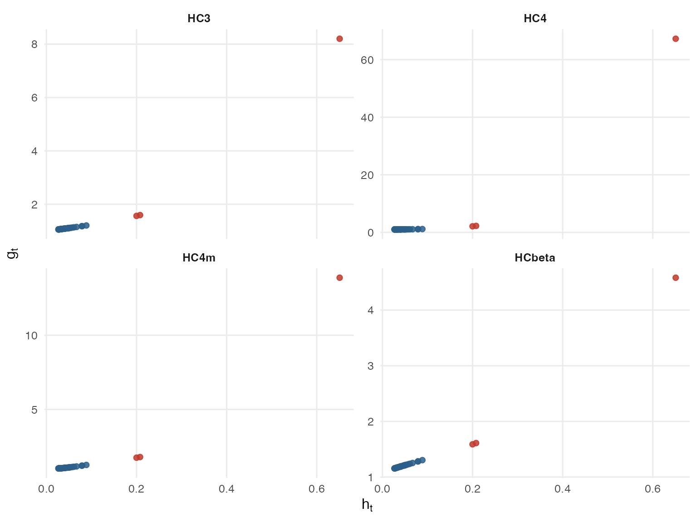

This vignette shows how to compare HC estimators with
hcinfer. The focus is on the objects returned by the
package: coefficient tables, confidence intervals, covariance matrices,
robust weights, and leverage diagnostics.
List the available estimators
Use hc_methods() to see the estimator names accepted by
hcinfer() and vcov_hc().
library(hcinfer)
hc_methods()
#> # A tibble: 9 × 4
#> type label description default_arguments
#> <chr> <chr> <chr> <chr>
#> 1 hc0 HC0 White heteroskedasticity-consistent estimator. none
#> 2 hc1 HC1 HC0 with degrees-of-freedom scaling. none
#> 3 hc2 HC2 Leverage-adjusted estimator with exponent 1. none
#> 4 hc3 HC3 Leverage-adjusted estimator with exponent 2. none
#> 5 hc4 HC4 Adaptive leverage correction by Cribari-Neto. none
#> 6 hc4m HC4m Modified HC4 correction by Cribari-Neto and d… none
#> 7 hc5 HC5 High-leverage correction by Cribari-Neto, Sou… k = 0.7
#> 8 hc5m HC5m Modified HC5 correction by Li, Zhang, Zhang, … k = 0.7, k1 = 1,…
#> 9 hcbeta HCbeta Beta-distribution leverage correction. c1 = 7, c2 = 0.7…Fit one model
Comparisons should start from one fitted model. Here we use the same OLS fit for all methods.
Run several methods
The type argument selects the HC estimator. Store each
result in a named list so that later extraction is straightforward.
Compare one coefficient
Most applied comparisons focus on one or a few coefficients. The
helper below uses tests() and confint() to
extract one coefficient and adds the method name.
extract_term <- function(result, method, term = "income_scaled_sq") {
row <- tests(result, parm = term)
ci <- confint(result, parm = term)
tibble::tibble(
method = method,
estimate = row$estimate,
std_error = row$std_error,
p_value = row$p_value,
conf_low = ci$conf_low,
conf_high = ci$conf_high,
reject = row$reject
)
}
comparison <- purrr::imap(results, extract_term)
comparison <- dplyr::bind_rows(comparison)
comparison
#> # A tibble: 5 × 7
#> method estimate std_error p_value conf_low conf_high reject
#> <chr> <dbl> <dbl> <dbl> <dbl> <dbl> <lgl>
#> 1 hc0 1587. 830. 0.0559 -39.7 3214. FALSE
#> 2 hc3 1587. 1995. 0.426 -2324. 5498. FALSE
#> 3 hc4 1587. 5489. 0.772 -9171. 12345. FALSE
#> 4 hc4m 1587. 2553. 0.534 -3417. 6591. FALSE
#> 5 hcbeta 1587. 1547. 0.305 -1446. 4620. FALSEAdd interval widths when the goal is to compare how conservative the estimators are for this coefficient.
comparison <- comparison |>
dplyr::mutate(interval_width = conf_high - conf_low)
comparison
#> # A tibble: 5 × 8
#> method estimate std_error p_value conf_low conf_high reject interval_width
#> <chr> <dbl> <dbl> <dbl> <dbl> <dbl> <lgl> <dbl>
#> 1 hc0 1587. 830. 0.0559 -39.7 3214. FALSE 3254.
#> 2 hc3 1587. 1995. 0.426 -2324. 5498. FALSE 7821.
#> 3 hc4 1587. 5489. 0.772 -9171. 12345. FALSE 21516.
#> 4 hc4m 1587. 2553. 0.534 -3417. 6591. FALSE 10009.
#> 5 hcbeta 1587. 1547. 0.305 -1446. 4620. FALSE 6066.Plot the robust standard errors
A simple plot can help show how the estimators differ for the selected coefficient.
ggplot2::ggplot(comparison, ggplot2::aes(x = method, y = std_error)) +
ggplot2::geom_col(fill = "#305c8a") +
ggplot2::labs(
x = "Estimator",
y = "Robust standard error for the quadratic income term"
) +
ggplot2::theme_minimal(base_size = 12)
Compare confidence intervals directly
confint() returns a tibble for one result. Use the
stored comparison table when you want intervals from several methods
side by side.
comparison |>
dplyr::select(method, conf_low, conf_high, interval_width)
#> # A tibble: 5 × 4
#> method conf_low conf_high interval_width
#> <chr> <dbl> <dbl> <dbl>
#> 1 hc0 -39.7 3214. 3254.
#> 2 hc3 -2324. 5498. 7821.
#> 3 hc4 -9171. 12345. 21516.
#> 4 hc4m -3417. 6591. 10009.
#> 5 hcbeta -1446. 4620. 6066.Compare covariance objects
Use vcov_hc() when you only need the covariance matrix
and diagnostics, not coefficient tests.
cov_hc3 <- vcov_hc(fit, type = "hc3")
cov_hc3
#>
#> ── 🥪 HC3 robust covariance ────────────────────────────────────────────────────
#> 📐 Model: `expenditure ~ income_scaled + income_scaled_sq`
#> Dimension: 3 x 3
#> Observations: 50
#> Parameters: 3
#> 🎯 Maximum leverage: 0.6508
#> ⚖️ Maximum robust weight: 8.2009
#> Use `vcov()` to extract the stored covariance matrix.
vcov(cov_hc3)
#> (Intercept) income_scaled income_scaled_sq
#> (Intercept) 1199026 -3256564 2180884
#> income_scaled -3256564 8853073 -5934046
#> income_scaled_sq 2180884 -5934046 3980990Plot the adjustment factors against leverage values for a covariance object.
plot(cov_hc3)
The covariance object also has a summary method.
summary(cov_hc3)
#>
#> ── 🥪 HC3 robust covariance summary ────────────────────────────────────────────
#>
#> ── 📐 Model ──
#>
#> Formula: `expenditure ~ income_scaled + income_scaled_sq`
#> Observations: 50 | Parameters: 3 | Residual df: 47
#>
#> ── 🎯 Leverage diagnostics ──
#>
#> # A tibble: 6 × 2
#> statistic value
#> <chr> <chr>
#> 1 minimum 0.02669
#> 2 q1 0.03106
#> 3 median 0.03912
#> 4 mean 0.06
#> 5 q3 0.04962
#> 6 maximum 0.6508
#> Maximum leverage: observation 2 (index 2), value 0.6508
#> Average leverage: 0.0600
#> Concentration: 10.85 x average leverage
#>
#> ── ⚖️ Robust weights ──
#>
#> # A tibble: 6 × 2
#> statistic value
#> <chr> <chr>
#> 1 minimum 1.056
#> 2 q1 1.065
#> 3 median 1.083
#> 4 mean 1.251
#> 5 q3 1.107
#> 6 maximum 8.201
#> Maximum weight: observation 2 (index 2), value 8.2009
#> Median weight: 1.0831
#> Concentration: 7.57 x median weight
#>
#> ── ⚙️ Method parameters ──
#>
#> No additional method parameters.Compare diagnostics across methods
All covariance and inference objects store robust weights and leverage values. The leverage values depend only on the fitted model, while the weights depend on the HC estimator.
covariances <- purrr::map(methods, \(method) {
vcov_hc(fit, type = method)
})
names(covariances) <- methods
diagnostic_comparison <- purrr::imap(covariances, \(cov, method) {
tibble::tibble(
method = method,
max_leverage = max(cov$leverage),
max_weight = max(cov$weights),
median_weight = stats::median(cov$weights)
)
})
diagnostic_comparison <- dplyr::bind_rows(diagnostic_comparison)
diagnostic_comparison
#> # A tibble: 5 × 4
#> method max_leverage max_weight median_weight
#> <chr> <dbl> <dbl> <dbl>
#> 1 hc0 0.651 1 1
#> 2 hc3 0.651 8.20 1.08
#> 3 hc4 0.651 67.3 1.03
#> 4 hc4m 0.651 13.9 1.05
#> 5 hcbeta 0.651 4.58 1.19The next figure mirrors the empirical display in the HCbeta paper: adjustment factors are plotted against leverages for HC3, HC4, HC4m, and HCbeta.
figure_methods <- c("hc3", "hc4", "hc4m", "hcbeta")
figure_covariances <- purrr::map(figure_methods, \(method) {
vcov_hc(fit, type = method)
})
names(figure_covariances) <- figure_methods
weight_comparison <- purrr::imap(figure_covariances, \(cov, method) {
tibble::tibble(
method = cov$label,
leverage = cov$leverage,
weight = cov$weights,
high_leverage = cov$leverage > 3 * cov$p / cov$n
)
}) |>
dplyr::bind_rows() |>
dplyr::mutate(
method = factor(method, levels = c("HC3", "HC4", "HC4m", "HCbeta"))
)
ggplot2::ggplot(weight_comparison, ggplot2::aes(x = leverage, y = weight)) +
ggplot2::geom_point(
ggplot2::aes(color = high_leverage),
size = 1.8,
alpha = 0.85
) +
ggplot2::facet_wrap(~method, scales = "free_y", ncol = 2) +
ggplot2::scale_color_manual(
values = c(`FALSE` = "#2c5f8a", `TRUE` = "#c0392b"),
guide = "none"
) +
ggplot2::labs(
x = expression(h[t]),
y = expression(g[t])
) +
ggplot2::theme_minimal(base_size = 12) +
ggplot2::theme(
strip.text = ggplot2::element_text(face = "bold"),
panel.grid.minor = ggplot2::element_blank()
)
What to report
A compact reporting table usually needs the estimator, estimate, robust standard error, p-value, and interval endpoints.
comparison |>
dplyr::select(method, estimate, std_error, p_value, conf_low, conf_high)
#> # A tibble: 5 × 6
#> method estimate std_error p_value conf_low conf_high
#> <chr> <dbl> <dbl> <dbl> <dbl> <dbl>
#> 1 hc0 1587. 830. 0.0559 -39.7 3214.
#> 2 hc3 1587. 1995. 0.426 -2324. 5498.
#> 3 hc4 1587. 5489. 0.772 -9171. 12345.
#> 4 hc4m 1587. 2553. 0.534 -3417. 6591.
#> 5 hcbeta 1587. 1547. 0.305 -1446. 4620.Use this comparison to document how sensitive your conclusion is to
the choice of HC estimator. Use vignette("hcinfer-hcbeta")
for a closer look at the default HCbeta estimator.